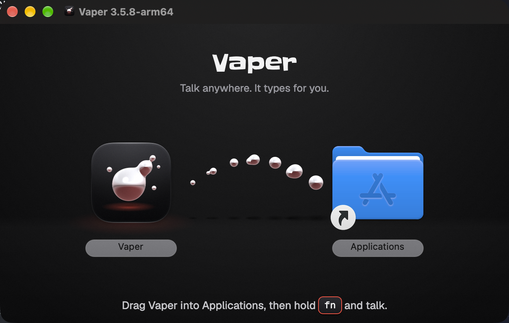
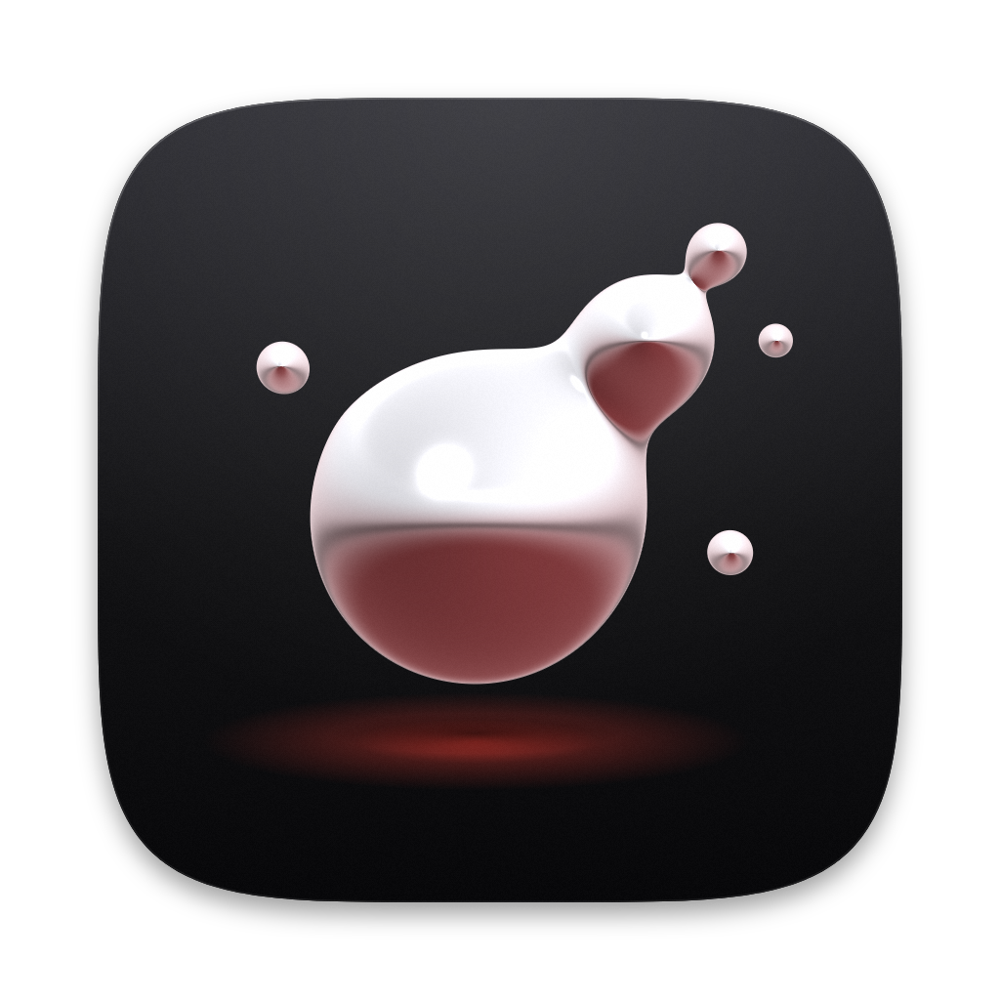
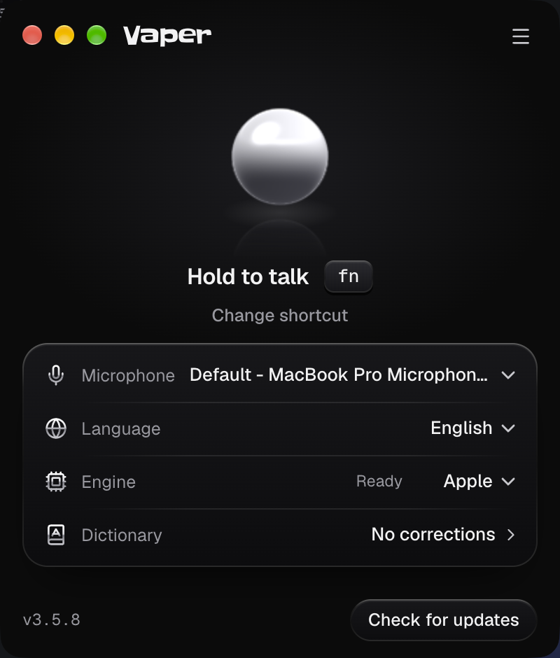
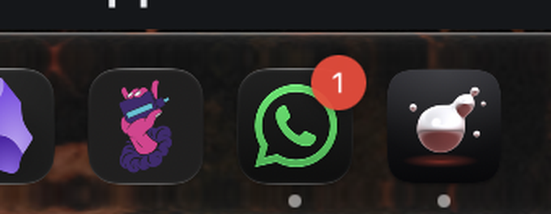
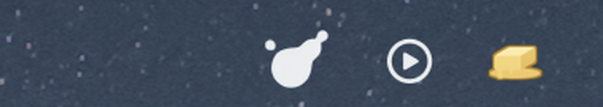

Vaper: new icon, installer and app

DMG installer, real Finder window from a local unsigned build

App icon

Settings window, running app

Dock: the old installed release (left) next to the new build (right)

Menu bar glyph